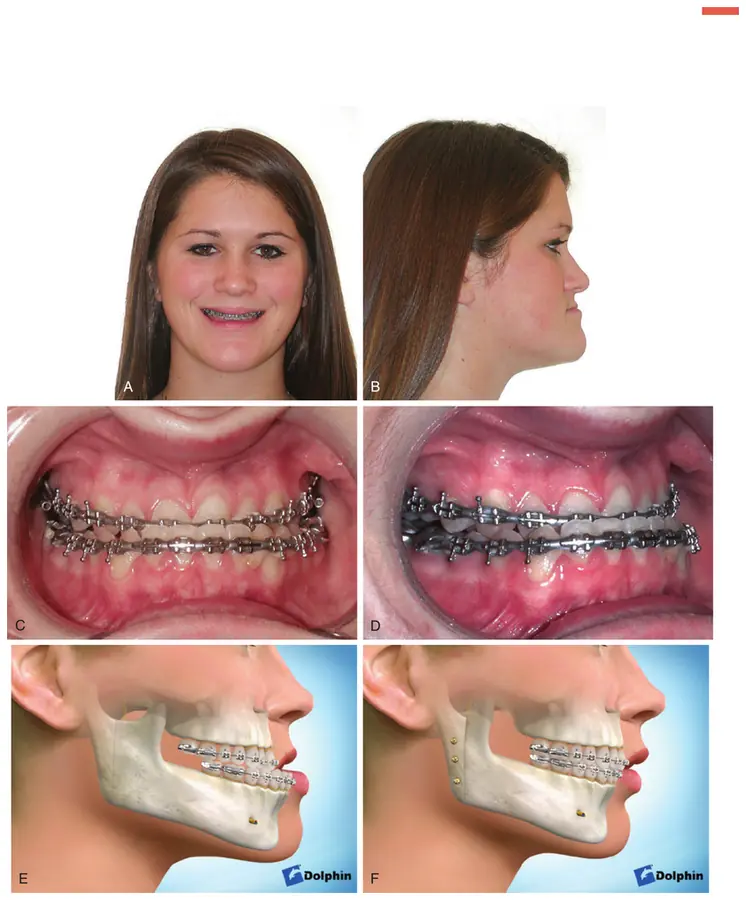
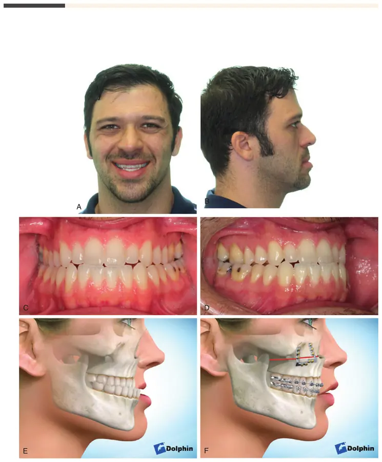

نسخه استخراجشده؛ ترجمه یا تأیید علمی انجام نشده است. وضعیت: captured
اضافهی مندیبل — تظاهر: رشد اضافی مندیبل مکرراً به اکلوژن غیرطبیعی با روابط کلاس III مولری و کاسپیدی و اورجت معکوس در ناحیهی انسیزور میانجامد.

و ویژگیهای صورتی همراهش: برجستگی یکسوم تحتانی صورت، بهویژه در ناحیهی لب پایین و چانه در ابعاد قدامی-خلفی و عمودی. و در موارد شدید، اورجت معکوس بزرگ میتواند مانع توانایی بیمار در بستن کافی لب بدون فشار غیرطبیعی عضلات اوربیکولاریس اوریس شود.
و یک نکتهی تاریخی: اضافهی مندیبل یکی از نخستین ناهنجاریهای دنتوفاشیال بود که شناخته شد بهترین درمانش ترکیب ارتودنسی و جراحی است. و هرچند تکنیکهای جراحی اصلاحش از اواخر دههی ۱۸۰۰ گزارش شدهاند، استفادهی گسترده از تکنیکهای امروزی تنها از میانهی سدهی بیستم آغاز شد.
و استئوتومی سابآپیکال: وقتی رابطهی اورجت معکوس به ناحیهی دنتوآلوئولار قدامی مندیبل محدود باشد، میتواند برای اصلاح به کار رود — استخوان در ناحیهی محل کشیدن یک پرمولر یا مولر برداشته میشود و قطعهی دنتوآلوئولار قدامی به موقعیت خلفیتری میرود. و هرچند این اعمال بهندرت به کار میروند، گاهی در مواردی با فرم قوس غیرمعمول همراه با فضاهای بیدندان انجام میشوند.
راه اول — استئوتومی عمودی راموس: در اوایل دههی ۱۹۵۰، کالدول و لترمن استئوتومیای در راموس مندیبل برای اصلاح اضافهی مندیبل را رایج کردند.
راه دوم — استئوتومی ساژیتال اسپلیت دوطرفه (BSSO): نخست توسط تراونر و اوبوگزر توصیف و بعدها توسط دالپونت، هانسیک، و اپکر اصلاح شد.
و به همین علت: تکنیک BSSO به یکی از رایجترین روشهای درمان کمبود مندیبل و اضافهی مندیبل بدل شده است — یعنی یک تکنیک، هر دو جهت.
و عیبش: ترومای بالقوهی عصب آلوئولار تحتانی، با کاهش حس بعدی که میتواند دائمی باشد، در ناحیهی لب پایین و چانه در دورهی بلافاصله پس از عمل.
و کمبود مندیبل — تظاهر: آشکارترین ویژگی بالینیاش موقعیت عقبرفتهی چانه در نمای نیمرخ است. و سایر ویژگیها: چین لابیومنتال اضافی با ظاهر برجستهی لب پایین، وضعیت غیرطبیعی لب بالا، و فرم ضعیف گلو. و داخلدهانی با روابط کلاس II مولری و کانینی و اورجت افزایشیافته در ناحیهی انسیزور همراه است.
و ژنیوپلاستی: اصلاح لبهی تحتانی — یعنی ژنیوپلاستی — با پیشروی هم میتواند انجام شود.
اضافهی ماگزیلا میتواند در سه بُعد رخ دهد: قدامی-خلفی، عمودی، یا عرضی.

و یک نکتهی تاریخی: اصلاح جراحی ناهنجاریهای دنتوفاشیال با جراحی کامل ماگزیلا — یعنی لوفور یک — تنها از اوایل دههی ۱۹۷۰ رایج شده است. پیش از آن، جراحی ماگزیلا بهطور محدود انجام میشد و بیشتر تکنیکها تنها بخشهایی از ماگزیلا را با جراحی سگمنتال جابهجا میکردند.
و آن مشکل قدیمی — و راهحل عجیبش: در سالهای آغازین جراحی ماگزیلا، بسیاری از تکنیکها در دو مرحله انجام میشدند: برشهای فاسیال یا باکال در یک عمل، و سپس بریدن استخوان کام ۳ تا ۴ هفته بعد.
و چرا این مرحلهبندی؟ با این فرض انجام میشد که برای حفظ خونرسانی کافی به قطعهی استئوتومیشده ضروری است.
و حالا آن کشف — پژوهش بِل در اوایل دههی ۱۹۷۰: پژوهش بِل و همکاران نشان داد که جراحی کامل ماگزیلا میتواند بدون بهخطر انداختن خونرسانی ماگزیلا انجام شود.
و مکانیسمی که نشان داد: جریان خون طبیعی در قطعات استخوانی از رگهای تغذیهکنندهی بزرگتر میتواند تحت شرایط جراحی معینی معکوس شود.
و شرط کلیدیاش: اگر یک پایهی بافت نرم در کام و ناحیهی لثهای ماگزیلا حفظ شود، گردش کولترال ترانساستخوانی و بافت نرم و شبکههای عروقی آناستوموزکنندهی لثه و کام و سینوس میتوانند خونرسانی کافی فراهم کنند، که تحرک کل ماگزیلا را ممکن میسازد.
و نتیجهی امروزی: استئوتومیهای کامل ماگزیلا در حال حاضر رایجترین اعمال انجامشده برای اصلاح ناهنجاریهای ماگزیلا هستند.
و کمبود ماگزیلا: تکنیک اصلی اصلاحش، استئوتومی لوفور یک است.
و یک نکتهی تشخیصی مهم که باید رویش انگشت گذاشت: در شمار زیادی از بیماران با اکلوژن کلاس III، فکی که بیمار و گاهی ارائهدهندگان دندانی سرزنشش میکنند، مندیبل است — حال آنکه مشکل در واقع کمبود ماگزیلا است. و جراحی روی فک اشتباه میتواند زیبایی صورت را، بهویژه در بیماران مرد، خراب کند.
و برای کمبود شدیدتر میانصورت: در ناهنجاریهای شدید میانصورت همراه با کمبود لبهی زیرحدقهای و برجستگی مالار، لوفور سه یا نوع اصلاحشدهی آن لازم میشود.
و ارتوگناتیک برای آپنهی انسدادی خواب:
و مکانیسمش: این بهبود، نتیجهی گسترش راه هوایی در سطح کام نرم، قاعدهی زبان، و راه هوایی هیپوفارنژیال است. و نکتهی دیگر: گسترش راه هوایی ناشی از جراحی در واقع همهی ابعاد را دربر میگیرد، حتی گسترش جانبی.